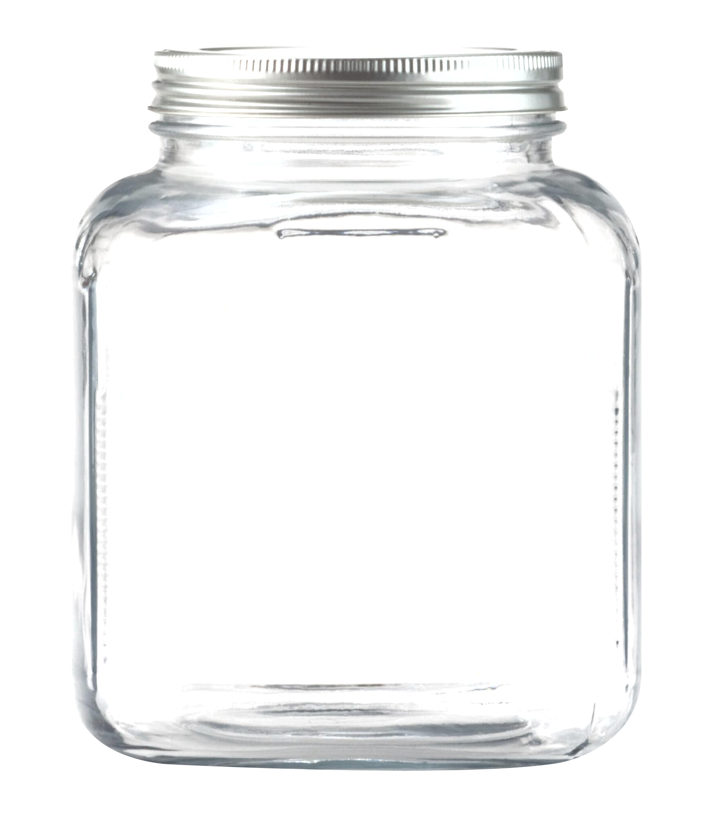

She dreams
cloudShe plans
createShe builds


Hello there! Thank you for visiting my portfolio site, where you will learn all about me and my projects! I have always been a very driven person. I have always known what I want out of life, and I will make sure it will be achieved. My life goals are what keeps me going whether it be travel goals, food goals, or be a better dog-mother goals. My career goals started at a very young age, when I decided I wanted to be a dental hygienist. I loved going to have my teeth cleaned as a child, but I didn't realize that that was not the case for most everyone else. I met my goal and became a dental hygienist and have helped people have their best smiles for the past 6 years. Unfortunately, the dental field is very demanding on the body, since you are in odd angles all day long, especially when trying to see back to those wisdom teeth! Chronic pain and having to touch people in ways they don't want to be touched every 6 months has led me to a career change.
I am passionate about creativity, learning, strategy, and logic puzzles. I feed my creativity with home decoration, scrapbooking, and crafts. My obsession with learning has led me to teach myself basics of HTML, CSS, and Javascript after work and on weekends. My passion for strategy and logic puzzles is practiced with playing board games and logic puzzles with my friends once a week. These qualities I will use to become the best web developer I can be and to continue to develop new skills as technology advances.
Other interests of mine include kayaking, snorkeling, hiking, rock climbing, and relaxing with a drink in my hand on the beach. I am married to a Discovery Cove Dolphin Trainer, Kevin, and our child is our treat-beggar, long-napper golden retriever, Lilu.